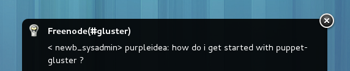

I’m usually on IRC, but I don’t often notice incoming pings until after the fact. I had to both write, and modify various scripts to get what I wanted, but now it’s all done, and you can benefit from my hacking by following along…
The Setup
Laptop -> Gnome-Terminal -> SSH -> Screen -> Irssi
This way, I’m connected to IRC, even when my laptop isn’t. I run irssi in a screen session on an SSH server that I manage, and I use gnome-terminal on my laptop. If you don’t understand this setup, then you’ll need to get more comfortable with these tools first.
Fnotify
The first trick is getting irssi to store notifications in a uniform way. To do this, I modified an irssi script called fnotify. My changed version is available here. Installation is easy:
# on your ssh server:
cd /tmp; wget https://gist.githubusercontent.com/purpleidea/9017ba480391fc2936760a94ae1791ac/raw/3e4ac1404e2f3836842fe3ae01d40b8b345f8155/fnotify.pl -O fnotify.pl
cp /tmp/fnotify.pl ~/.irssi/scripts/
# in irssi:
irssi> /load perl
irssi> /script load fnotify
When someone sends you a direct message, or highlights your nick on IRC, this script will append a line to the ~/.irssi/fnotify file on the SSH server.
Watching fnotify
On your local machine, we need a script to tail the fnotify file. This was surprisingly hard to get right. The fruit of my labour is available here. You’ll want to copy this script to your local ~/bin/ directory. I’ve named this script irssi-fnotify.sh. This script watches the remote fnotify file, and runs notify-send and paplay locally to notify you of any incoming messages, each time one comes in.
SSH Activation
We want the irssi-fnotify.sh script to run automatically when we connect to our SSH server. To do this, add the following lines to your ~/.ssh/config file:
# home
Host home
HostName home.example.com
PermitLocalCommand yes
LocalCommand ~/bin/irssi-fnotify.sh --start %r@%h
You might also want to have other directives listed here as well, but that is outside the scope of this article. Now each time you run:
ssh home
The irssi-fnotify.sh command will automatically run.
Magic
I’ve left out some important details:
Here’s an example of how this helps me to be more responsive in channel:
|  |
| helping out in #gluster |
I hope you found this useful.
Happy Hacking,
James
Your comment has been submitted and will be published if it gets approved.
Click here to see the patch you generated.
{kind=link}
{kind=link}
Comments
Nothing yet.
Post a comment